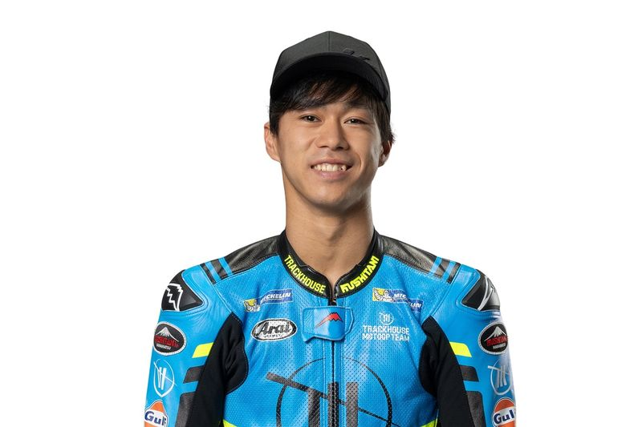

Ai Ogura nació el 26 de enero de 2001 en Tokio, Japón. Es un piloto de motociclismo que participa en el Campeonato Mundial, dentro de la categoría de Moto2.

Fecha de nacimiento: 26/01/2001
Lugar de nacimiento: Kiyose, Tokyo, Japón
Altura: 169 cm
Peso: 60 kg
Moto: Aprilia
Dorsal: 79
Se caracteriza por un estilo de conducción agresivo y a la vez constante. Su primera aparición internacional fue en Moto3 en 2017, y en 2020 ascendió a Moto2 de la mano del equipo Honda Team Asia.
Resultados de Ai Ogura en la temporada 2024 en Moto2
Concepto
Valor
Puntos
274
Posición
1º
Poles
5
Victorias
5
Podios
10
A lo largo de su trayectoria ha sumado múltiples podios, destacando especialmente su victoria en el Gran Premio de España de 2021. Estos resultados lo han consolidado como una de las grandes promesas de la categoría intermedia del mundial.